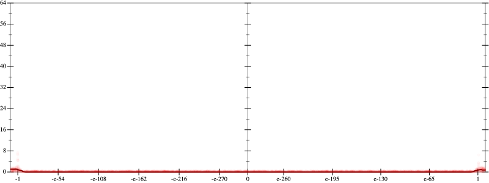
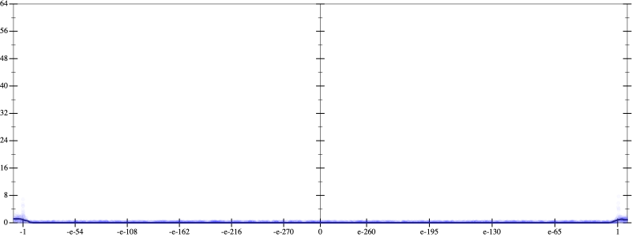
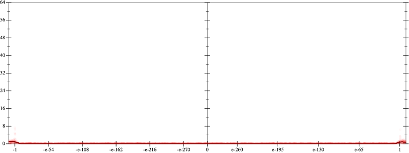
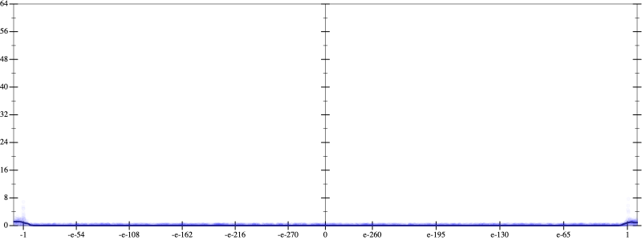

Initial program 0.0
\[\left(\left(\left(\left(\left(665280.0 + -7983360.0 \cdot \left(x \cdot x\right)\right) + 13305600.0 \cdot \left(\left(\left(x \cdot x\right) \cdot x\right) \cdot x\right)\right) + -7096320.0 \cdot \left(\left(\left(\left(\left(x \cdot x\right) \cdot x\right) \cdot x\right) \cdot x\right) \cdot x\right)\right) + 1520640.0 \cdot \left(\left(\left(\left(\left(\left(\left(x \cdot x\right) \cdot x\right) \cdot x\right) \cdot x\right) \cdot x\right) \cdot x\right) \cdot x\right)\right) + -135168.0 \cdot \left(\left(\left(\left(\left(\left(\left(\left(\left(x \cdot x\right) \cdot x\right) \cdot x\right) \cdot x\right) \cdot x\right) \cdot x\right) \cdot x\right) \cdot x\right) \cdot x\right)\right) + 4096.0 \cdot \left(\left(\left(\left(\left(\left(\left(\left(\left(\left(\left(x \cdot x\right) \cdot x\right) \cdot x\right) \cdot x\right) \cdot x\right) \cdot x\right) \cdot x\right) \cdot x\right) \cdot x\right) \cdot x\right) \cdot x\right)\]
Applied simplify0.1
\[\leadsto \color{blue}{\left(\left(\left(1520640.0 \cdot x\right) \cdot x\right) \cdot {\left(x \cdot x\right)}^{3} + \left({\left(x \cdot x\right)}^{3} \cdot \left(\left(x \cdot x\right) \cdot \left(x \cdot x\right)\right)\right) \cdot \left(x \cdot \left(4096.0 \cdot x\right) + -135168.0\right)\right) + \left(\left(\left(x \cdot x\right) \cdot \left(x \cdot x\right)\right) \cdot \left(\left(x \cdot x\right) \cdot -7096320.0 + 13305600.0\right) + \left(\left(x \cdot -7983360.0\right) \cdot x + 665280.0\right)\right)}\]
Taylor expanded around 0 0.1
\[\leadsto \left(\left(\left(1520640.0 \cdot x\right) \cdot x\right) \cdot {\left(x \cdot x\right)}^{3} + \left({\left(x \cdot x\right)}^{3} \cdot \left(\left(x \cdot x\right) \cdot \left(x \cdot x\right)\right)\right) \cdot \left(x \cdot \left(4096.0 \cdot x\right) + -135168.0\right)\right) + \left(\left(\left(x \cdot x\right) \cdot \left(x \cdot x\right)\right) \cdot \left(\color{blue}{-7096320.0 \cdot {x}^{2}} + 13305600.0\right) + \left(\left(x \cdot -7983360.0\right) \cdot x + 665280.0\right)\right)\]
Applied simplify0.0
\[\leadsto \color{blue}{\left(\left(-135168.0 + \left(x \cdot x\right) \cdot 4096.0\right) \cdot \left(\left(\left(x \cdot x\right) \cdot {x}^{3}\right) \cdot \left(\left(x \cdot x\right) \cdot {x}^{3}\right)\right) + \left(665280.0 + \left(x \cdot -7983360.0\right) \cdot x\right)\right) + \left(\left(x \cdot x\right) \cdot \left(x \cdot x\right)\right) \cdot \left(\left(1520640.0 \cdot x\right) \cdot {x}^{3} + \left(-7096320.0 \cdot \left(x \cdot x\right) + 13305600.0\right)\right)}\]
 
